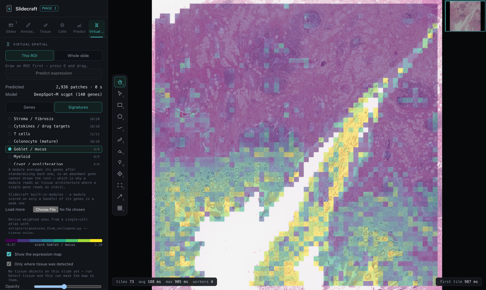
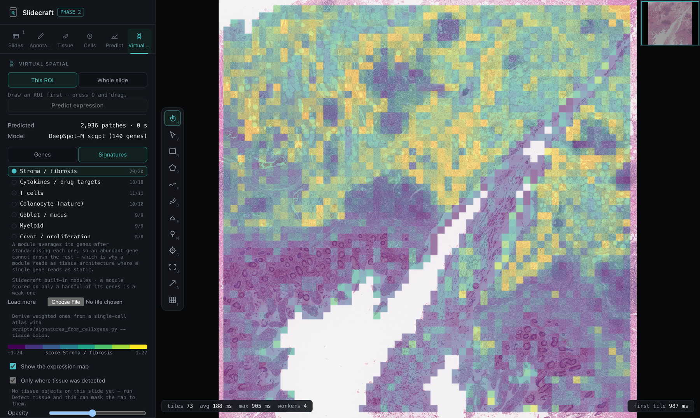
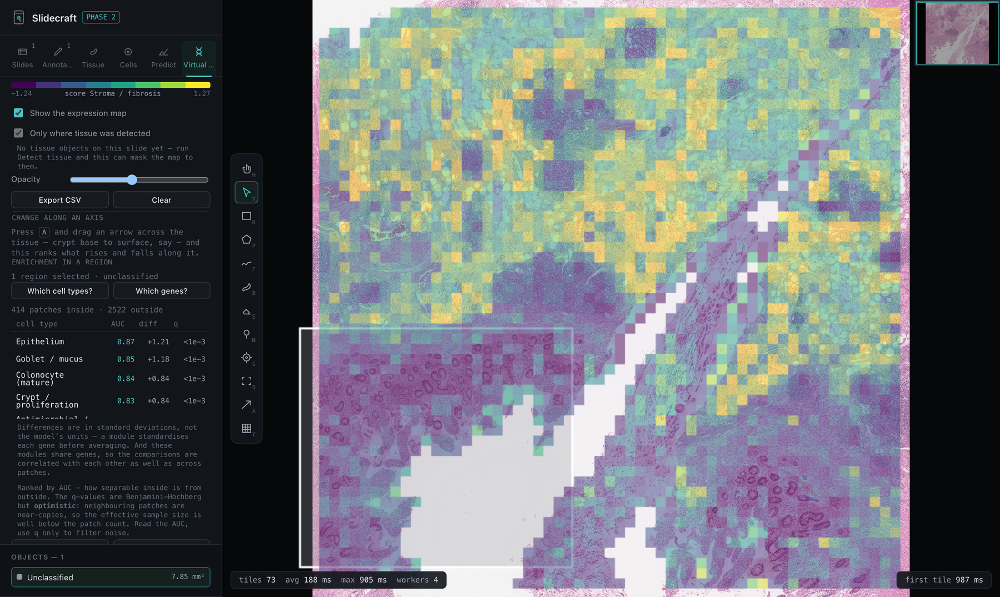
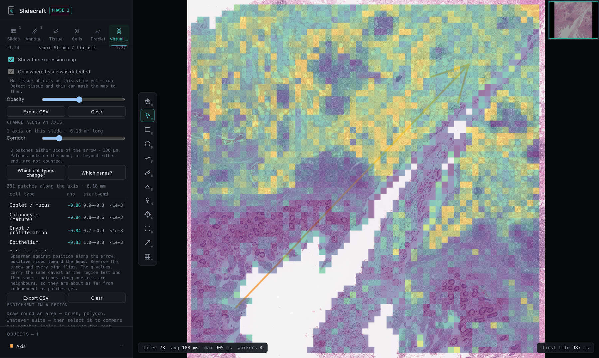
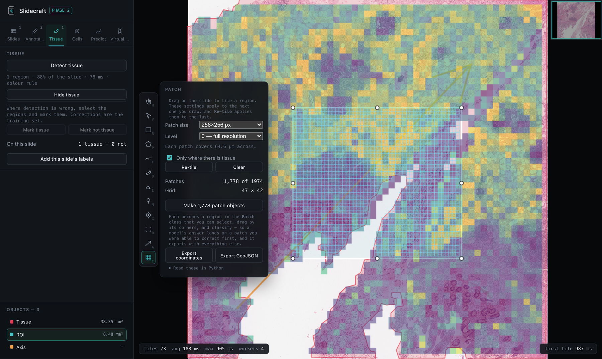

Open an SVS, NDPI or MIRAX slide in the browser. Annotate it, detect tissue, fix what the detector got wrong — and those fixes train a classifier you can save and run over the next hundred slides. Then predict spatial gene expression from the morphology itself, on your own GPU cluster.
Slides are read by OpenSlide compiled to WebAssembly. Nothing is uploaded; a 2 GB slide never leaves your machine.

Correcting the model and teaching it are the same action, which is the whole idea.
A colour rule finds fragments, keeps separate ones separate, and grows into faded tissue that connects to something confident.
Select the dust, bubbles and pen marks it took for tissue and mark them. Mark the real ones too. Blank glass is sampled for you.
A logistic regression over colour and local texture at two scales — because an artefact is pale and smooth, while faint tissue is pale and textured. Fits in about a second.
Labels accumulate across slides. One slide teaches the model that slide's stain; three teach it tissue.
Point it at a directory. One GeoJSON per slide, written beside it — drop the folder back in and every slide reopens with its annotations.
SVS, NDPI, MRXS, BigTIFF, tiled TIFF, DICOM, VMS/VMU — OpenSlide's coverage, because it is OpenSlide. Drag a MIRAX folder in, data directory and all.
Polygon, freehand, brush and eraser with live boolean ops, resizable ROIs, your own classes, and undo that does not clone the document per stroke.
SAM and SlimSAM in the browser. The encoder runs once per view; each click after that costs milliseconds, and new masks never overlap ones already there.
Held-out scores are measured on whole regions the model never saw, and are simply not shown when there is too little to measure.
Level-0 slide pixels with QuPath's own fields, so annotations round-trip with QuPath instead of being a dead end.
DeepSpot-M predicts expression from morphology alone. Score fourteen built-in cell-type modules, or ask which genes are enriched in a region you drew.
Submits a whole slide to Slurm over SSH, watches the queue and brings the result back. Authentication is your agent and config; no password is ever handled.
No gated weights are bundled. Convert your own with the included exporter; your Hugging Face token stays in your browser and goes only to huggingface.co.
DeepSpot-M reads a 224 px tile and answers with a value for any of 19,338 genes. That is a billion-parameter encoder, so the heavy pass runs wherever the GPU is and the browser gets a file:
python scripts/predict_expression.py slide.svs \
--panel ibd-colon --submit HOST --partition gpuq
It submits over SSH with your own keys and agent — no password is asked
for or stored — watches the queue, and brings back
slide.expression.bin. Drop that folder in and the map opens
with the slide.
Per-gene accuracy from H&E is modest, so one predicted gene is mostly its own error. A module averages its genes after standardising each, which leaves the shared signal and averages the independent noise down. Fourteen ship built in, and you can derive your own from a single-cell atlas filtered to the disease you care about.

A map you can only look at is a picture. Two questions turn it into a result, and both are asked by drawing rather than by typing.
Draw round an area and rank the cell types over-represented in it against the rest of the slide — or the genes, if that is what you need. “CXCL13 is enriched here” is only useful to someone who already knows what CXCL13 means; “this is a lymphoid aggregate” is the finding itself.

Enrichment suits a thing with a boundary. Much of mucosa has none — expression varies along an axis, and splitting that into inside and outside throws away the ordering that was the signal. So press A, drag an arrow, and every gene or module is rank-correlated against position along it. Positive rises toward the head; reverse the arrow and every sign flips.

Press T and drag. The grid arrives with the drag, clipped to the region and — if you ask — to detected tissue. A grid too coarse for the question, or sitting half on glass, is then one look away rather than an hour of encoder time away.

One short walkthrough per capability. Each stands on its own — start wherever your question is.
SVS, NDPI, MIRAX, BigTIFF, DICOM and more. Why a .mrxs has to be dropped as a folder, and what to do with a batch of hundreds.
Annotations and expression maps named after a slide load with it. What arrived is listed, and one switch turns it off.
Polygon, freehand, brush and eraser with live boolean ops, your own classes, and undo that does not clone the document per stroke.
Fragments found separately and grown into faded tissue. What the thresholds mean and when to move them.
Mark what the detector got wrong and those marks are the training set. Fits in about a second, and accumulates across slides.
Point it at a directory: one GeoJSON per slide, written beside it, ready to be dropped back in.
SAM and SlimSAM in the browser. The encoder runs once per view; every click after that is milliseconds.
Press T and drag. Size in pixels at a level, clipped to detected tissue, and every patch can become an editable object.
Embed once, then label, train, look, disagree, retrain. Cached embeddings are what make the retrain instant.
DeepSpot-M reads the H&E and answers with a value per gene. Compute on a GPU and drop the folder in, or import an ONNX export.
One flag submits to Slurm over SSH, watches the queue and brings the result back. Your keys and agent, never a password.
Fourteen cell-type modules built in, or 111 derived from the CELLxGENE Census. Why an average beats any one predicted gene.
Draw round an area and rank the cell types — or the genes — over-represented in it against the rest of the slide.
Press A and drag an arrow, crypt base to surface. Ranked by how each gene or module rises and falls along it.
GeoJSON in level-0 pixels with QuPath's own fields, patch coordinates as JSON, and expression as CSV.
Cross-origin isolation, slow first tiles on shallow pyramids, and the tissue class catching your cell segmentations.
git clone https://github.com/GlastonburyC/slidecraft.git
cd slidecraft
npm install
npm run devNode 20+. The folder-batch feature needs Chrome or Edge, which are the browsers that can write files back into a directory you choose.
| Key | Does |
|---|---|
| Space | Show / hide annotations |
| V | Select — Shift adds, Backspace deletes |
| Middle drag | Pan, with any tool active |
| B | Brush — right-click the tool for size |
| O | Draw an ROI; drag its corners to resize |
| G | Click-to-segment |
| 1–9 | Switch class |
OpenSlide via WebAssembly for pixels, OpenSeadragon for the camera, deck.gl
for the overlay, ONNX Runtime Web for the models, and a small pile of
geometry. It is cross-origin isolated, because SharedArrayBuffer
is what makes reading a slide in a browser possible at all.